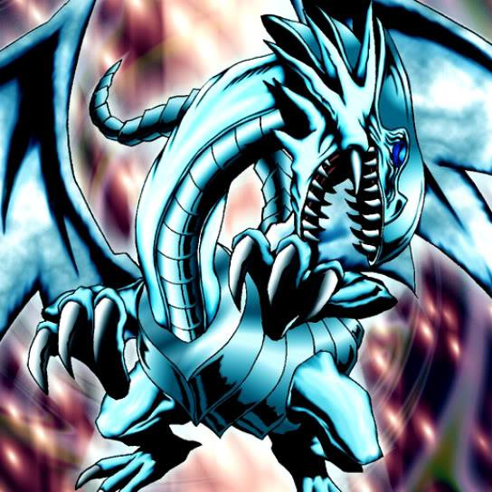

-
Dragão branco de olhos azuis
Este dragão lendário é uma poderosa máquina de destruição. Praticamente invencível, muito poucos enfrentaram esta magnífica criatura e viveram para contar a história.
ATK/ 3000 DEF/ 2500 -
Mago Negro
O mago definitivo em termos de ataque e defesa.
ATK/ 2500 DEF/ 2100 -
Dragão Negro de Olhos Vermelhos
Um dragão feroz com um ataque letal.
ATK/ 2400 DEF/ 2000 -
Ojama Amarelo
Ele é um dos do Trio Ojama. Diz-se que ele "butts" com qualquer meio necessário. Diz-se também que quando os três se juntam, algo acontece.
ATK/ 0 DEF/ 1000 -
Jinzo
Os Cards de Armadilha, bem como seus efeitos no campo, não podem ser ativados. Negue todos os efeitos dos Cards de Armadilha no campo.
ATK/ 2400 DEF/ 1500 -
Slifer, o Dragão dos Céus
Requer 3 Tributos para ser Invocado por Invocação-Normal (não pode ser Baixado Normalmente). A Invocação-Normal deste card não pode ser negada. Quando Invocado por Invocação-Normal, cards e efeitos não podem ser ativados. Durante a Fase Final, se este card foi Invocado por Invocação-Especial: envie-o para o Cemitério.
ATK/ ? DEF/ ? -
Neos, o HERÓI do Elemento
Um novo HERÓI do Elemento chegou do Neoespaço! Quando ele inicia uma Fusão de Contato com um Neoespacial, seus poderes desconhecidos vêm à tona. .
ATK/ 2500 DEF/ 2000 -
Cyber Dragão
Se seu oponente controlar um monstro e você não controlar nenhum monstro, você pode Invocar este card por Invocação-Especial (da sua mão).
ATK/ 2100 DEF/ 1600